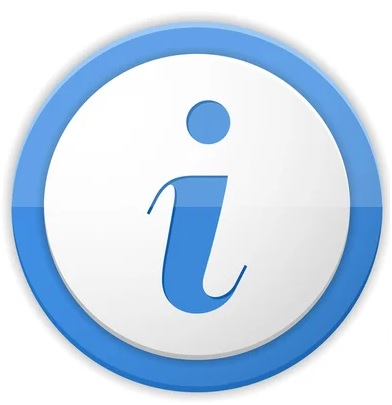

Ok. Cerrar
Este mapa muestra algunas de las herrramientas más usuales para trabajar en visores web.
Por ejemplo, podés cambiar el estilo de mapa de fondo, modificar el zoom o escala, llevarlo a pantalla completa,
medir un área y périmetro de tu interés, mostrar, ocultar posiciones marcadas previamente y filtrarlas mostrando sólo las que indiqués,
copiar al portapapeles las coordenadas de un punto de tu interés, trazar la ruta óptima entre dos lugares que señales y mostrar sus detalles y activar la ubicación en tiempo real.
En la parte inferior de la pantalla te muestra la escala y un minimapa de situación relativa a nivel mundial.
Combina lenguajes de marcación, estilo y programación: HTML, CSS y Javascript respectivamente.-
Ok. Cerrar
MAPA WEB BASICO CON SUS HERRAMIENTAS MAS USUALES
